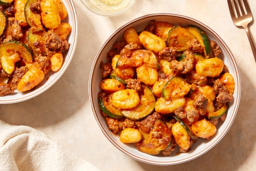

Spicy Beef & Gnocchi

Ingredients
- 10 ounces ground beef
- 3/4 pounds gnocchi
- 2 cloves garlic
- 1 zucchini
- 2 tablespoons tomato paste
- 2 tablespoons mascarpone cheese
- 1/4 cup grated romano cheese
- 1 1/2 tablespoons calabrian chile paste
Instructions
- Fill a medium pot 3/4 of the way up with salted water; cover and heat to boiling on high. Wash and dry the zucchini; halve lengthwise, then thinly slice crosswise. Peel and roughly chop 2 cloves of garlic.
- In a large pan (nonstick, if you have one), heat a drizzle of olive oil on medium-high until hot. Add the sliced zucchini in an even layer; season with salt and pepper. Cook, without stirring, 4 to 5 minutes, or until lightly browned. Transfer to a bowl. Wipe out the pan.
- In the same pan, heat a drizzle of olive oil on medium-high until hot. Add the beef; season with salt and pepper. Cook, stirring frequently and breaking the meat apart with a spoon, 4 to 5 minutes, or until lightly browned. Carefully drain off and discard any excess oil.
- Add the chopped garlic, tomato paste, and as much of the chile paste as you’d like, depending on how spicy you’d like the dish to be. Season with salt and pepper. Cook, stirring constantly, 1 to 2 minutes, or until thoroughly combined and the beef is cooked through.
- Add the browned zucchini and 3/4 cup of water; season with salt and pepper. Cook, stirring frequently, 2 to 3 minutes, or until the sauce is thickened. Turn off the heat.
- Meanwhile, add the gnocchi to the pot of boiling water. Cook 2 to 3 minutes, or until the gnocchi float to the top of the pot. Drain thoroughly.
- Add the cooked gnocchi and mascarpone to the pan of cooked beef and sauce. Stir to thoroughly combine. Taste, then season with salt and pepper if desired. Serve the finished beef and gnocchi garnished with the romano. Enjoy!